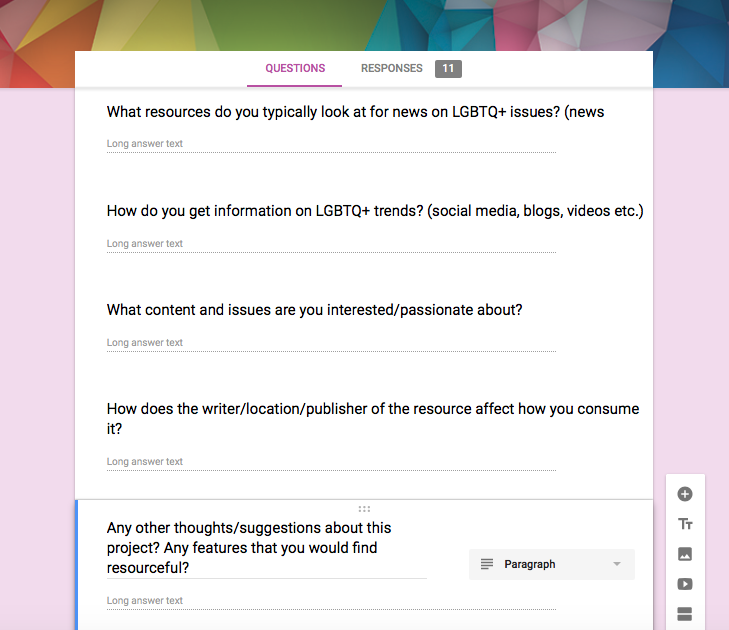

... but then I started to do user research
Interviews + Survey
While my initial brainstorm was a good start, it was designed by and
essentially just for me. Instead, I wanted to understand how I could
go about building a platform that caters to people's needs, is enjoyable
and helps support a community. I wanted to understand general users'
background, experiences and current resources.
I created a set of questions that touched on four general things:
background, travel, technology and resources/information. In background,
I asked about general demographics such as age, location, current occupation or school,
and how they identify. In travel, I asked general questions about how often they
traveled, reasons for travel and whom they typically travel with. I also asked some more
product related questions such as concerns they have when visiting a new place, what
they are worried about may happen in new places, what precautions they take when visiting a new place
and their general experiences when visiting somewhere new. In technology, I was interested
in knowing how they typically access information (mobile, web, both), what apps they
use day to day and why, and what technology (devices, apps, websites) they typically use when
traveling. Lastly, I asked about the resources, information and sources they typically accessed.
I asked about what resources people typically used to learn about LGBTQ+ issues
and trends to understand context about people's current intake of LGBTQ+ topics and to
understand what resources have been successful in presenting this information. I also asked about
where they typically stay updated on all general news/trends and how the source/writer/location
affects how they consume it.

I interviewed about five people and got eleven responses on a survey,
for a total of about 16 responses. I very much enjoyed doing the in person
details because I was able to collect more detailed information, give the participant
brief context and delve deeper into their answers with follow-up questions. However, the survey was a
great way to connect with communities outside my circle of friends. I tried to interview
and survey those who I believed would be most likely to use the platform, such as those in
the LGBTQ+ community. However, next time I would like to collect an even wider range of
input by trying to reach out to people of different age groups, those not in school and
people located all over the world.
Affinity Mapping
After collecting this information and research about users, we realized that
we already had a lot of different data points to work with. Even though we only
got around 20 people's input, all the questions and unique points in people's
answers amounted to a lot of data.
I decided to use affinity mapping to organize and analyze the data.
The first goal I had with affinity mapping was just to organize the data into
various categories and notice particular trends. I tried hard to not group things
prematurely by question or obvious categories like positive and negative, but tried
to find the unique groupings that would really help me understand the data and users.
My mentor Jenna and I both created individual affinity maps, then came together to see the different
ways we grouped data and where we had similarities and differences. Most of our groups were pretty similar,
however we were able to join together several ideas to make stronger connections.
I used the tool MURAL to create my affinity map. First, I put each interview/survey
question answer onto a virtual post it note and then began to compare post its with
each other to detrmine relationships and trends. From there, clusters of related and unrelated
data points began to form. I ended up having about 16 groups. Some groups, such as demographic
and background groups were easy to make, as I was just able to group together similar things
and from there see the range of each group. However, some groups were much more difficult to
put together where the relationship wasn't immediately obvious such as people's concerns when traveling.
There was a wide range of concerns, including safety, visibility, logistical and acceptance. These
subcategories arrose under the umbrella of having traveling concerns. We were able to see the diversity
of issues and compare them amongst each other, concluding that people really wanted to understand
the climate and culture around LGBTQ+ people as well as to what degree they can be out.
(talk about other categories that arrose, some items put in multiple categories, subcategories,
talk about Jenna's vs mine and how we combined)
Breaking down the data like this was a great learning experience, for myself as a designer
and for the project! I gained lots of insight into people's background, current experiences
and the way they navigate the world. I was able to find areas of opportunity, trends in our users
and itterate on my initial idea into something more crafted towards users. Affinity mapping
was a great way to synthesis and draw conclusions from the data we collected, to
encorporate these points into our design process.
Competitive Research
-why: understand current popular/liked platforms, usability problems,
inform design process, market gaps (understand whats missing from market)
-likes and dislikes
-similar sites: Yelp, HRC, LGBTQ+ Map, Trip Advisor
-got from survey: Pink News, Lonely Planet, OutTraveler, Travel Noire
Conclusions and Solution
-new/deeper insights from data
-understand values/background of users
-user needs, gaps I haven't addressed
-changed direction to be more about safe spaces/ratings/opinions from
trusted others
-new mission/goal of product
-Lo-fi sketches
-features/pages including
-about page
-interactive map page
-state pages
-city/town pages
-user profile
Little Big Things
-color pallette
-logo
-graident
Hi-Fidelity Mockups
-explain and show each page
-itterations and design choices
Conclusion + Future
-why this project means a lot to me
-s/o to jenna and resources
-things i'd change about user research
-what worked and didnt work
-future/current:
-user testing on people in person
-might move to development